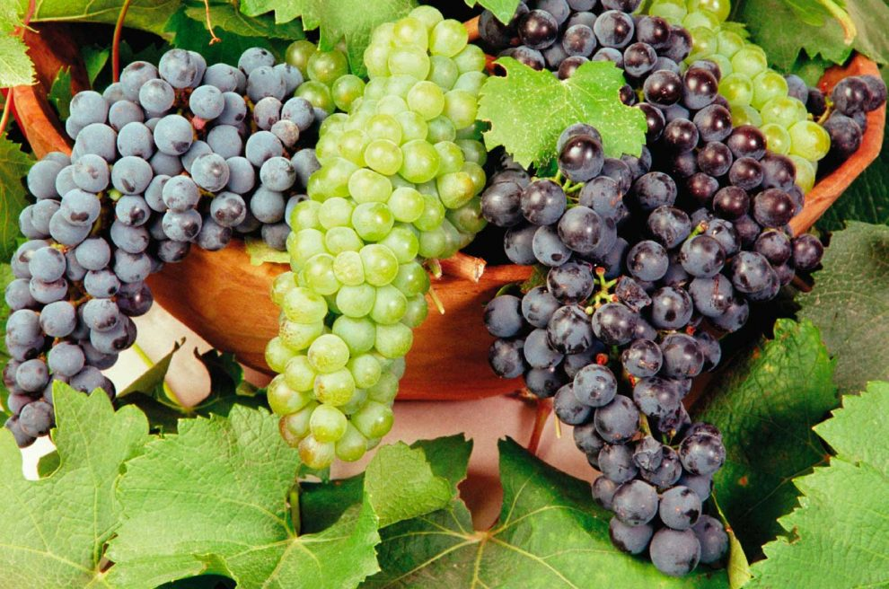

Los vinos espumosos, vinos espumantes o de aguja son vinos con gas disuelto. El gas se consigue haciendo que haya una segunda fermentación dentro de la botella cerrada (o en algunos casos en depósitos cerrados de algunos hectolitros), el CO2 que se produce no puede escapar y se disuelve en el líquido. La segunda fermentación en botella se puede conseguir añadiendo azúcar, embotellando el vino antes de que haya terminado de fermentar o cerrando la cuba de fermentación antes de que termine esta.
Los vinos espumosos se elaboran a partir de muchos tipos de uva, aunque tres de ellos son los más utilizados: Chardonnay, Pinot Noir y Pinot Meunier.
La mayor parte de los vinos espumantes se hacen con una mezcla de Chardonnay y Pinot Noir, por ejemplo 60%/40%. Los champanes Blanc de blanc (blanco de blanco) son 100% chardonnay.. El champán Blanc de noir (blanco de negro) se hace al 100% con Pinot Noir o uvas tintas, usando una especial presión rápida, de manera que el color tinto del hollejo no manche el mosto prensado
Consiste en someter el vino, una vez embotellado, a una segunda fermentación para producir el gas. Este proceso se aplica al champán y es considerado el de mayor calidad.
Al realizar esa segunda fermentación, el CO2 que producen las levaduras no se pierde en el ambiente y se integra con el líquido creando esa sensación cremosa que tienen los vinos que se elaboran por el método champenoise.
Con este método se hace la segunda fermentación del vino en grandes tanques; cuando ya está gasificado se embotella. Aunque es más económico y sencillo que el anterior, el resultado final es óptimo.
Se inyecta el gas directamente en el vino, de manera industrial. Las burbujas obtenidas son más gruesas y menos integradas que en los dos procesos anteriores.
El CO2 es añadido, por lo que se elimina la segunda fermentación ya sea en botella como indica el método champenoise o en contenedores preparados antes del embotellado como cuando se labora bajo el método charmat. Este añadido se incluye a presión y de forma lenta para que se integre con el vino tranquilo.